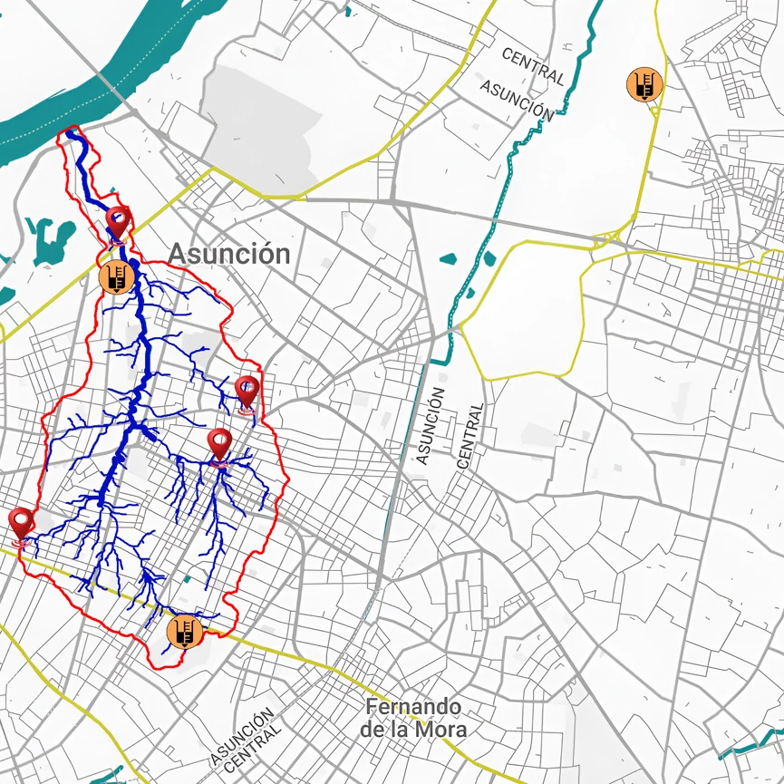

Proyecto final de Redes Industriales
Estación IoT para monitorear
el nivel del Mburicaó
Del radar al servidor y a la página de monitoreo. La microSD conserva la lectura aun si se interrumpe la comunicación.
Un cauce que atraviesa
vidas reales.
Lluvias intensas, una ciudad impermeable
y comunidades expuestas a crecidas rápidas.

Las estaciones del mapa pertenecen al estudio histórico.
No representan la red actual.
Fotografías reales facilitadas por el equipo.
Infraestructura insuficienteUna capacidad que necesita crecer.
Lluvias extremasEl nivel puede cambiar con rapidez.
Urbanización impermeableMenos infiltración, más escorrentía.
Sistema
Del radar al servidor
y a la página de monitoreo.
La estación registra cada lectura en la microSD antes de transmitirla.
Estación
Arquitectura de la estación
Dos transceptores RS-485 enlazan la PCB con el radar y el módem. La UPS entrega 5 V a la PCB y 12 V a los dos equipos externos.
Esquema
Esquemas electrónicos de la PCB
Seis bloques de la presentación P3 final. Selecciona un esquema para ampliarlo.
Montaje
De la PCB al montaje en banco
La placa, la bancada de pruebas y la estación integrada en el laboratorio.
Registro
Cómo se registran las lecturas
Prueba una lectura normal, una falla del sensor o un corte de internet. Las mediciones avanzan en intervalos de cinco minutos.
- Guardadas en microSD
- 1
- Pendientes de envío
- 0
Cada lectura se guarda primero en la microSD.
| id | timestamp | nivel | created_at | estado |
|---|
- OK
- Lectura válida recibida a tiempo.
- FALLA_SENSOR
- El sensor no entregó una lectura válida.
- RECUPERADO
- Lectura válida recibida con más de 120 s de retraso.
Visualización
Del registro a la pantalla
El monitoreo del Mburicaó muestra cómo evoluciona el nivel del arroyo. La tabla del servidor muestra las lecturas recibidas.
Monitoreo Mburicaó
Crecida del 3 de octubre de 2026.
Servidor · Tabla Masi
Lecturas recibidas con sus horas de medición e inserción.
Pruebas de laboratorio
Resultados y Conclusiones
Los ensayos verificaron la adquisición, el registro local y la recuperación de lecturas tras un corte de internet.
Operación continua
17 h 50 min en banco, con una medición cada 5 min.
Recuperación de un corte de internet
El servidor recibió las 7 lecturas que quedaron pendientes.
En un ensayo aparte, el servidor confirmó un envío por GPRS en 3,9 s.
Conclusión
El prototipo midió, guardó y transmitió las lecturas en banco. Antes de probar el radar en el arroyo, queda comprobar la exactitud sobre agua y repetir los cortes de red y energía.
2 estaciones en funcionamiento
SIL y MASI usan el hardware desarrollado.